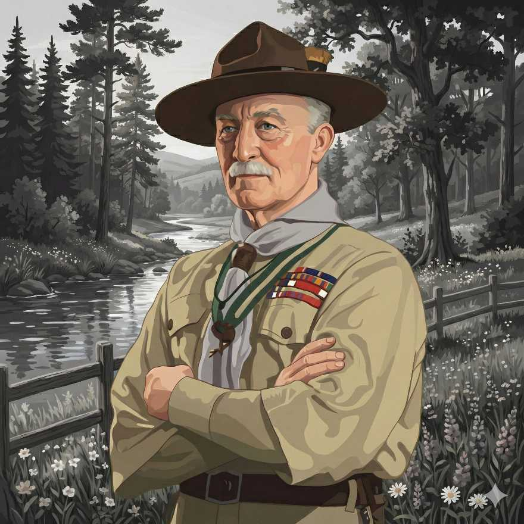
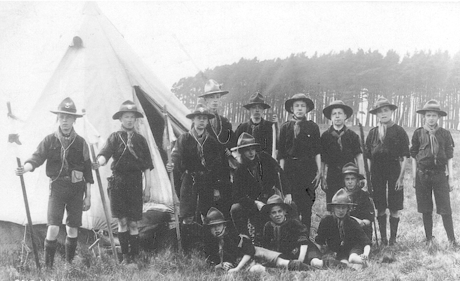
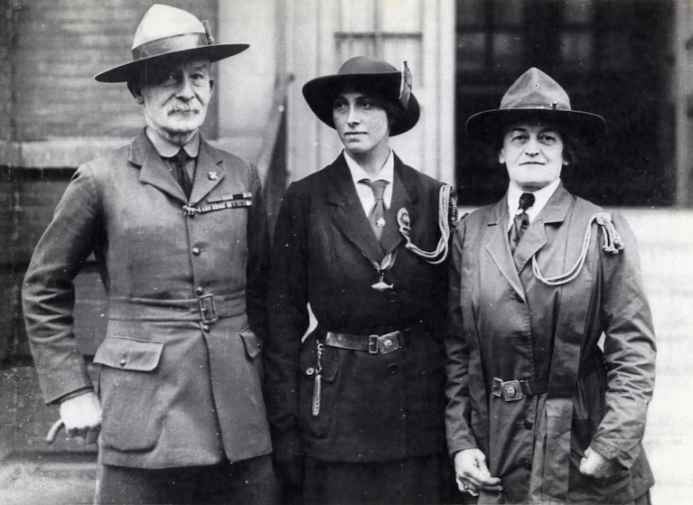
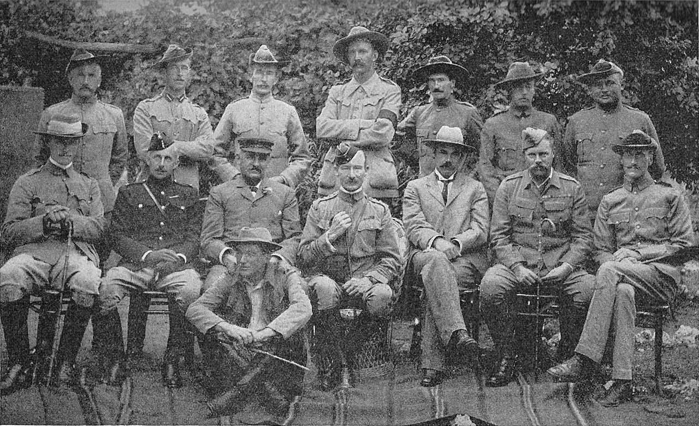
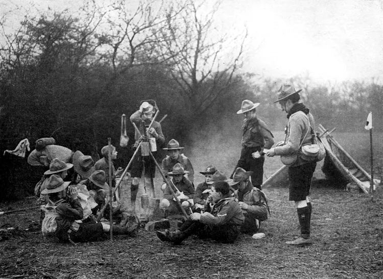

স্কাউটিং এর ইতিহাস জানতে প্রস্তুত হোন

লর্ড বেডেন-পাওয়েল অফ গিলওয়েল
ব্রিটিশ সেনা অফিসার, লেখক এবং বিশ্বব্যাপী স্কাউট আন্দোলনের প্রতিষ্ঠাতা। তার যুগান্তকারী বই "Scouting for Boys" আজ পর্যন্ত ০ কোটিরও বেশি স্কাউটের প্রেরণার উৎস।
২২ ফেব্রুয়ারি ১৮৫৭ সালে জন্ম। দশ সন্তানের ষষ্ঠ। পিতা অক্সফোর্ডের জ্যামিতির অধ্যাপক। মাত্র তিন বছর বয়সে পিতার মৃত্যুর পর মা হেনরিয়েটা গ্রেস একাই সন্তানদের বড় করেন এবং বি.পি.-কে প্রকৃতির প্রতি আগ্রহী করে তোলেন।
দক্ষ চিত্রশিল্পী, মঞ্চ অভিনেতা, পিয়ানো ও বেহালা বাদক। চার্টারহাউস স্কুলের জঙ্গলে প্রথম স্কাউটিং দক্ষতা রপ্ত করেন।
স্কুলে আমার সবচেয়ে বড় শিক্ষা ছিলো জঙ্গলে লুকিয়ে থাকা, পশুদের পথ চেনা এবং নিজেকে বাঁচিয়ে রাখার কৌশল।
— রবার্ট বেডেন-পাওয়েল
২২ ফেব্রুয়ারি লন্ডনের প্যাডিংটনে জন্মগ্রহণ করেন। ছোটবেলা থেকেই প্রকৃতির প্রতি তার ছিল প্রবল আকর্ষণ।
১৩তম হুসারস রেজিমেন্টে সাব-লেফটেন্যান্ট হিসেবে যোগ দিয়ে ভারতে আসেন। দক্ষ স্কাউট ও গুপ্তচর হিসেবে তার পরিচিতি বাড়তে থাকে।
মাতোপোস পাহাড়ে অসামান্য গোয়েন্দা দক্ষতার জন্য স্থানীয় উপজাতিরা তাকে দেয় "যে নেকড়ে কখনো ঘুমায় না" উপাধি।
পশ্চিম আফ্রিকার আশান্টি উপজাতির রাজার কাছ থেকে তিনি বাম হাতের করমর্দনের রীতি শেখেন, যা পরবর্তীতে বিশ্বব্যাপী স্কাউটদের বিশেষ অভিবাদন হিসেবে স্বীকৃতি পায়।
৮,০০০ সেনার বিপরীতে মাত্র ১,০০০ সেনা নিয়ে ২১৭ দিন শহর রক্ষা। ছেলেদের নিয়ে "মাফেকিং ক্যাডেট কর্পস" গঠন করেন।
ইংল্যান্ডের ব্রাউনসি দ্বীপে ২০ জন কিশোর নিয়ে বিশ্বের প্রথম পরীক্ষামূলক স্কাউট ক্যাম্প আয়োজন করেন। এটিই স্কাউটিং আন্দোলনের আনুষ্ঠানিক শুরু।
তার যুগান্তকারী বই 'স্কাউটিং ফর বয়েজ' প্রকাশিত হয়। এটি বিশ্বব্যাপী অভাবনীয় সাড়া ফেলে এবং পৃথিবীর প্রায় সব ভাষায় অনূদিত হয়।
রাজা সপ্তম এডওয়ার্ডের পরামর্শে তিনি সেনাবাহিনী (লেফটেন্যান্ট জেনারেল পদ) থেকে অবসর নেন এবং নিজের সম্পূর্ণ জীবন স্কাউট আন্দোলনের প্রসারে উৎসর্গ করেন।
মেয়েদের ব্যাপক আগ্রহ দেখে বোন অ্যাগনেস বেডেন-পাওয়েলকে নিয়ে 'গার্ল গাইডস' প্রতিষ্ঠা করেন। পরবর্তীতে তাঁর স্ত্রী অলেভ বেডেন-পাওয়েল বিশ্ব চিফ গাইড হিসেবে এর হাল ধরেন।
রুডইয়ার্ড কিপলিংয়ের 'দ্য জাঙ্গল বুক' থেকে অনুপ্রাণিত হয়ে ছোটদের জন্য 'কাব স্কাউট' (১৯১৬) এবং বড়দের জন্য 'রোভার স্কাউট' (১৯১৮) চালু করেন।
স্কাউট লিডারদের উন্নত প্রশিক্ষণের জন্য লন্ডনে গিলওয়েল পার্ক প্রতিষ্ঠা করেন এবং প্রশিক্ষণ শেষে 'উডব্যাজ' প্রদানের ঐতিহাসিক প্রথা শুরু করেন।
লন্ডনের অলিম্পিয়ায় অনুষ্ঠিত ১ম বিশ্ব স্কাউট জাম্বোরিতে বিশ্বের সকল স্কাউট তাকে সর্বসম্মতিক্রমে 'বিশ্ব প্রধান স্কাউট' হিসেবে নির্বাচিত করে।
তৃতীয় বিশ্ব জাম্বোরি চলাকালীন ব্রিটিশ রাজা পঞ্চম জর্জ তাকে 'ব্যারন' উপাধিতে ভূষিত করেন। এরপর থেকে তিনি লর্ড বেডেন-পাওয়েল অফ গিলওয়েল নামে পরিচিত হন।
জীবনের শেষ দিনগুলো তিনি কেনিয়ার নিয়েরিতে কাটান এবং সেখানেই মৃত্যুবরণ করেন। তার শেষ বার্তায় তিনি বলেছিলেন:
"বিশ্বটাকে যেমন পেয়েছ, তার চেয়ে একটু সুন্দর রেখে যাওয়ার চেষ্টা করো।"
১৯০৭
প্রথম পরীক্ষামূলক ক্যাম্প
১৯০৮
বিশ্বের অন্যতম বেস্টসেলার
১৯২০
চিফ স্কাউট অফ দ্য ওয়ার্ল্ড

ব্রাউনসি দ্বীপ ক্যাম্প

লর্ড বেডেন-পাওয়েল (১৯১৯)

মাফেকিং অবরোধ

ঐতিহাসিক উড ব্যাজ
"আমি আমার আত্মমর্যাদার উপর নির্ভর করে প্রতিজ্ঞা করছি যে,
আল্লাহ/সৃষ্টিকর্তা ও আমার দেশের প্রতি কর্তব্য পালন করতে,
সর্বদা অপরকে সাহায্য করতে,
স্কাউট আইন মেনে চলতে
আমি আমার যথাসাধ্য চেষ্টা করব।"
"Once a Scout, always a Scout."